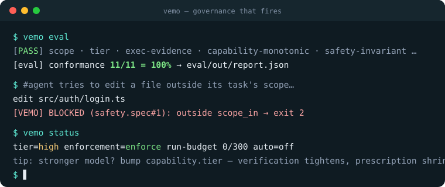
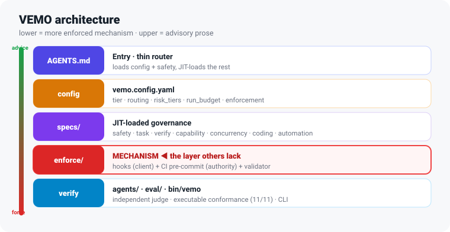

What it is, plainly: a small set of Markdown specs + thin scripts you drop into any repository. It enforces in three rings — agent-loop hooks, git gates, server-side CI — and only the first ring is harness-specific (Claude Code wiring ships; any harness with a hook API can reuse the same dispatcher — see docs/ADAPTERS.md). The git+CI rings bind any agent, any model, any harness. Core dependencies: none — Markdown + YAML + a little stdlib Python. Model names are advisory routing hints; the portable control is
capability.tier, a behavioral, vendor-neutral rubric (specs/capability.spec.md§1.5) that maps any LLM family to the same verification and safety gates. The governance skills/CLI use the GitHub CLI.
✨ The name
VEMO is named after vemödalen — a word coined by John Koenig in The Dictionary of Obscure Sorrows:
“the frustration of photographing something amazing when thousands of identical photos already exist — the same sunset, the same waterfall — each one a thumbprint in an endless mosaic of indistinguishable snapshots.”
It's the right name for an era when AI agents generate oceans of plausible, look-alike, untraceable code. VEMO is the layer that makes every change intentional, verified, and traceable — so your codebase isn't just one more indistinguishable snapshot.
And in that same spirit, VEMO is honest about its own originality: it stands on public best practices and its real contribution is making good, known patterns mechanical instead of merely written down. (See Credits.)
🤔 Why VEMO
AI coding agents are powerful but stateless and eager. Left ungoverned, the failure modes are predictable:
| Problem | Ungoverned | VEMO's answer |
|---|---|---|
| 🔄 Lost context across sessions | repeats work, contradicts past decisions | repo is the memory — durable task state in machine-readable front-matter |
| ⚡ Two sessions edit the same file | silent clobber | chat_id + heartbeat + takeover protocol (and a CI ownership check) |
| 🚫 Ships unverified | "looks done" merges | acceptance gates + an independent judge on critical work |
| 📉 Rule drift | rules live only in someone's head | rules live in the repo; the critical ones are enforced by hooks/CI |
| 🏃 Runaway autonomy | a long-horizon model "runs until cut off" | run-budget stop rules — hard-stop when unattended |
The thread: the rules that matter are mechanism, not hope. A "hard gate" written only as prose is a gate that fails the moment the model doesn't read it.
🚀 What you get — five shifts
| # | Most frameworks | VEMO |
|---|---|---|
| 1 | Gates are prose the model may ignore | Mechanically enforced (hooks + CI backstop) — they can't be argued with |
| 2 | Front-load every spec each session | Just-in-time loading — only the specs a task needs |
| 3 | One ceremony level for everything | Risk-tiered: R0 fast · R1 standard · R2 critical |
| 4 | Ceremony is a constant | Scales with your model (capability.tier: frontier→low) |
| 5 | Agent self-reports "done" | An independent judge verifies high-risk gates |
⚡ Quickstart
图形安装 / 安装与维护向导：在包含本次重构的完整 VEMO checkout 中运行：
python3 bin/vemo ui
# Windows: py -3 bin/vemo ui，或双击 ui/start.cmd
浏览器中选择项目 → 检查环境与文件变更 → 确认安装并验证。支持诊断、升级预览、失败恢复与卸载。 需要 Python 3.10+、Git 和 Bash 4+；UI 无需 Node.js 或云服务。当前为源码自带的本地安装器， Windows x64 另提供内置 Python 的离线 ZIP 安装包，见 Windows 安装。 Windows 已完成原生安装、门禁与浏览器验收；macOS 尚待平台验收。安装包未签名，不是系统级沙箱。
Headless installation uses the same service:
python3 bin/vemo setup install /absolute/your-project --preset python --json # preview
python3 bin/vemo setup install /absolute/your-project --preset python --apply
# In the target project:
python3 bin/vemo context
The installer preserves existing project entries and settings, refuses conflicting files, records payload
hashes, and runs local checks before success. Configure your remote required CI check separately.
Legacy vemo start / vemo init remain available for existing workflows.
The "aha": ask your agent to edit a file outside scope_in — the hook blocks it. You didn't have to police it.
▶ Full walkthrough: docs/QUICKSTART.md · the model in 5 ideas: docs/MENTAL_MODEL.md · 🖼️ visual guide + diagrams: docs/GUIDE.html
🧭 Architecture
Five layers — the lower you go, the more it's enforced mechanism rather than advisory prose:

┌ AGENTS.md ───────────── thin router: loads config + safety, then JIT-loads the rest (prose)
├ vemo.config.yaml ────── config where EVERY key has a consumer (selfcheck-enforced) (config)
├ specs/ ──────────────── safety · task · verify · concurrency · coding · automation (prose, JIT)
├ enforcement/ ────────── ⛨ hook dispatcher + git pre-commit/pre-push + CI workflow ◀── MECHANISM
└ agents/ · eval/ · bin/ governance-judge · validator+hook e2e eval · the `vemo` CLI (verify · tooling)
That is the deployment view. The complementary AI-platform view separates six stable responsibilities —
ingress · control · policy · execution · enforcement · evidence — so an adapter cannot silently become a
policy engine and an evidence viewer cannot grant itself authority. Inspect the executable, content-minimizing
contract with vemo platform --json. Its Definition/Provider/Consumer seams expose real composition, while
owner-local relationship invariants detect broken adapter bindings and dangling verification evidence;
vemo platform --check turns those local failures into a non-zero preflight. It remains distinct from runtime
execution proof and remote authority. Ownership, lifecycle, and boundaries are explained in
docs/PLATFORM.md.
The seams are supplied by a safe declarative extension layer: vemo extensions --json resolves stable
capabilities and dependencies from an explicit activation index, shows the deterministic load order, and
uses child-aware CompositionContext, grouped EffectScope, typed ContributionSpec, and reconciling
ExtensionLoader boundaries for programmatic use. Long-lived loaders retain unchanged registrations,
reverse only changed/removed effects, and visibly defer malformed index revisions while preserving the last
valid mount. Manifests never execute code; trusted internal effect installers cannot be selected from JSON.
Add and validate an extension with
docs/EXTENSIONS.md.
Enforcement is defense-in-depth — a gate never depends on the agent's goodwill, and every
"passed" claim needs an artifact the claimant did not type (evidence file · vemo verify receipt ·
required judge provenance record(s)):
agent → ⛨ PreToolUse hook → action runs → ⛨ git pre-commit → ⛨ git pre-push → ⛨ CI workflow → ✓ main
scope·blob·cmd·secret·budget scope·tier·judge acceptance·receipt same checks, server-side
(fast, client-side) (no self-downgrade) ·judge provenance (authoritative with branch
protection; --no-verify moot)
🖼️ Rich, color diagrams (layered stack, request lifecycle, the two-walls pipeline, and a risk×capability ceremony matrix) are in docs/GUIDE.html.
🔧 The vemo CLI
One verb-based entry point (run vemo for the map, vemo explain <topic> to learn a concept in one line):
| Command | Does |
|---|---|
vemo ui [--port N] [--no-browser] |
local Chinese browser wizard for install, upgrade, check, recovery and uninstall |
vemo setup install\|check\|uninstall\|recover <absolute-project-path> [--apply] |
the same installation service for terminal use; mutations are preview-first |
vemo start [--preset ...] [--profile ...] [--apply] |
preview or apply the product onboarding path |
vemo report [--days N] [--json] |
show observed local value, verification, readiness, and next actions |
vemo workflow [--json] |
show the Think -> Plan -> Build -> Review -> Test -> Ship -> Reflect delivery loop |
vemo platform [--json] [--check] |
show read-only planes, capability seams, relationship invariants, and local delivery posture; optionally fail preflight |
vemo extensions [--json] [--check] |
inspect declarative capabilities, dependencies, activation order, contributions, and stable composition failures |
vemo init [--preset python\|node\|cpp\|docs] |
low-level setup (used by vemo start --apply) |
vemo status |
plain-language dashboard: mode · tier · enforcement · budget · auto mode · active task |
vemo context |
machine-read session brief (≤20 lines: task · gates · budget · rules) — read this, not the raw config |
vemo verify [--no-cache] [--all-tasks] |
execute verification; --all-tasks preserves one receipt per task in a multi-task push |
vemo doctor |
health check (config, hooks, tools, stale tasks, gates-heartbeat) |
vemo selfcheck |
internal consistency: ENFORCED-BY claims and config keys must map to real consumers |
vemo eval |
executable conformance harness, validator + hook end-to-end (writes eval/out/report.json) |
vemo judge-brief [--lens <l>] [--range <r>] |
staged/range-only dossier; excludes other tasks' untracked files |
vemo heartbeat |
stamp the active task's heartbeat in place (no hand-editing the task file) |
vemo task create\|note\|state |
create/update task records with tool-written RFC3339 UTC timestamps |
vemo explain <topic> |
tiers · gates · auto · budget · judge · capability · presets · verify · platform · extensions |
vemo auto on\|off\|status |
unattended mode — on requires a human at a TTY; records every decision |
vemo budget status\|reset |
run-budget / stop rules |
vemo tier <paths…> / vemo check <path> |
required risk tier / is a path in scope? |
vemo fleet <command> |
PC-wide inventory, profiles, readiness reports, preview-first onboarding, audit verification |
vemo skill-score / vemo skill-audit |
quality bar for VEMO's own skills (frontmatter / naming / catalog parity) / catalog-vs-disk consistency audit |
One PC, many projects
Install a user-local launcher once, discover Git projects without changing them, then opt projects into a policy profile explicitly:
python bin\vemo fleet install
python bin\vemo fleet install --apply
vemo fleet discover C:\Users\User\Documents --max-depth 6
vemo fleet register C:\work\product-a --profile solo
vemo fleet status --json
vemo fleet onboard C:\work\product-a --profile solo # dry-run; add --skills-root and --apply only by consent
Fleet is local-first: its registry and hash-chained audit log stay under VEMO_HOME; discovery and status are
read-only; onboarding refuses dirty worktrees and project-owned conflicts. See docs/FLEET.md for the
operating model and docs/STANDARDS.md for the NIST SSDF/CSF, SLSA, OWASP, and OpenSSF mapping.
🧩 Skills
Reusable, script-backed procedures the agent auto-invokes by their frontmatter description (catalog: skill/_catalog.md):
| Skill | For |
|---|---|
call-graph |
who-calls / what-calls / chains / impact (tool-backed: cg.py) |
flow-discovery |
generate a flow doc from real call chains |
docs-sync |
keep README / GUIDE / docs in sync |
governance-sync · -contribute · -release |
pull upstream updates · PR improvements back · cut a release |
automation-mode |
enter full-auto (unattended) mode |
hackathon-submission |
pre-submission readiness check against a contest's own rules |
Skills are intentionally thin: contracts stay readable, deterministic work lives in scripts, and release-time documentation updates are routed through
docs-sync.
📚 Documentation
Organized by need (Diátaxis): learn → do → look-up → understand.
| I want to… | Go to |
|---|---|
| See the whole picture (usage + architecture diagrams) | 🖼️ docs/GUIDE.html |
| Understand platform planes, seams, invariants, ownership, and lifecycle | docs/PLATFORM.md · vemo platform --check --json |
| Add or diagnose a declarative capability extension | docs/EXTENSIONS.md · vemo extensions --check --json |
| Get working in 5 minutes | docs/QUICKSTART.md |
| Migrate an existing agent playbook into VEMO | docs/PLAYBOOK_ADOPTION.md |
| Run a Devpost-style hackathon build under a deadline (Codex adapter incl.) | docs/HACKATHON_PLAYBOOK.md |
| Design diagnostic coaching/tutoring agent flows | docs/DIAGNOSTIC_PROMPTING.md |
| Govern every Git project on one PC | docs/FLEET.md |
| Understand the product path and commercial boundary | docs/PRODUCT.md |
| Understand standards and commercial readiness mapping | docs/STANDARDS.md |
| Understand how VEMO thinks | docs/MENTAL_MODEL.md |
| Find the right doc fast | docs/INDEX.md |
| Threat model · roadmap | SECURITY.md · ROADMAP.md |
| Look up config / changes | vemo.config.yaml · CHANGELOG.md |
🌱 Credits
VEMO combines public patterns from agent governance, spec-driven development, documentation architecture, and long-horizon model safety. It openly credits the best practices it stands on:
- GitHub Spec Kit —
init+ preset ergonomics, spec-driven workflow. - 12-Factor Agents — own-your-context, stateless reducer.
- AGENTS.md + Anthropic's context engineering — thin, just-in-time entry.
- Diátaxis — docs organized by user need.
- AIIGovernance / Wildmeerkat — explicit separation of ingress, orchestration, normative policy, hard gates, and records; VEMO adapts the clarity without adopting a channel-specific bridge or mandatory single-writer leader.
- DeepSeek Harness — explicit capability seams, inspectable composition, and owner-local relationship invariants; VEMO adopts those contracts without introducing a second agent runtime.
- Fable 5 / Mythos analysis (2026) — the run-budget stop rules and the evidence-completeness judge check.
See docs/SCALING.md for why VEMO holds up — and gets more useful — as models get stronger.
🤝 Contributing
PRs welcome. VEMO governs itself — changes flow through its own task lifecycle, and the same hooks/CI that
protect consumers protect this repo. See CONTRIBUTING.md. Good first contributions:
a new presets/<stack>.yaml, a new eval/ scenario, or a Windows hook runner.
⭐ Star history
If a governance framework that proves it works (and tells you where it doesn't) is what you've been missing — a ⭐ helps others find it.
📄 License
MIT © 2026 The VEMO Authors.
⚠️ Status
Status. VEMO is a framework of specs + thin scripts; treat it as a starting skeleton you tune via
vemo.config.yaml. Model names referenced in defaults (Opus 4.8, Fable 5, Mythos) are examples, not trust
anchors. Swap them freely; keep capability.tier calibrated to observed model behavior.